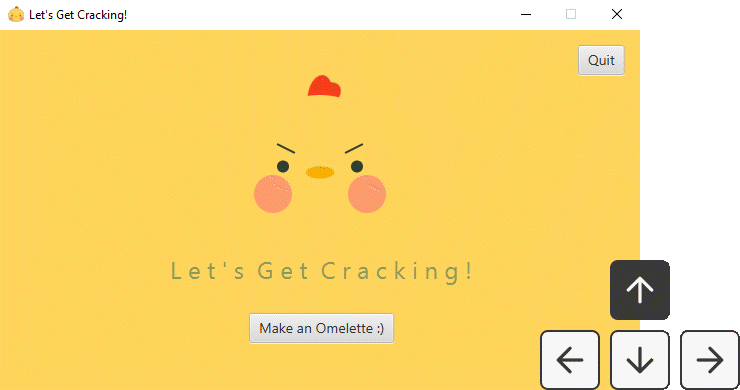

Wireframing
I created layouts of each scene and noted the JavaFX components I needed for my project.

Java / JavaFX
game design / development
illustration
OVERVIEW
For my introductory object-oriented programming course, I coded an omelette-making game using Java and JavaFX. This project took me approximately 50 hours to complete and ended up winning the class cartoon competition, in which my project was one of six winners selected from a total of 420 students.
Timeline
October 2022, 1 week
Location
Providence, RI
INSPIRATION
Right before college, I began learning how to cook and instantly fell in love with the therapeutic, immersive process. Eggs have always been a staple food in my life and I’ve always been drawn to their cute shapes and versatility. I was inspired to create this game by my new love for cooking and Cooking Mama, a Nintendo DS game that was popular when I was growing up.
I had planned to have three different egg options: omelettes, sunny-side ups, and hard-boiled.
Having just learned the basics of JavaFX, I wasn't sure how to approach the project, especially since I had several different scenes I wanted to capture for a variety of egg dishes. After speaking with several TAs on the scope and design of the project and scavenging JavaFX libraries, I narrowed the game to just making omelettes and had a clearer idea on coding and the various JavaFX classes I could source from.
I created layouts of each scene and noted the JavaFX components I needed for my project.
I ended up with 6 scenes to more accurately depict the various stages of cooking. I used a combination of JavaFX components and hand-drawn illustrations to create each scene.
User can press the arrow keys on a computer accordingly to change background colors.

Finished chives & cheese and ham & cheese omelettes.
This was the most technically challenging project I had completed at this point in time. Overall, I'm really proud of what I was able to achieve in a only a week.
Be ambitious during ideation but practical during execution.
I originally planned to have three different modes for the game: omelettes, sunny-side up eggs, and hard-boiled eggs. Given that I was on a time crunch, I ended up only going with omelettes, which was still very difficult to execute. Since I was looking forward to this project weeks in advance of its release, I made sure to block out time for the project so I could solely focus my time and energy on it.
Utilize the resources you have.
I spent much of my time in JavaFX libraries to see if what I wanted to do was even achievable or practical given the limitations of JavaFX. Many of the classes I ended up using were ones the TAs hadn't even heard about. I also often asked the TAs questions to receive the guidance I needed.